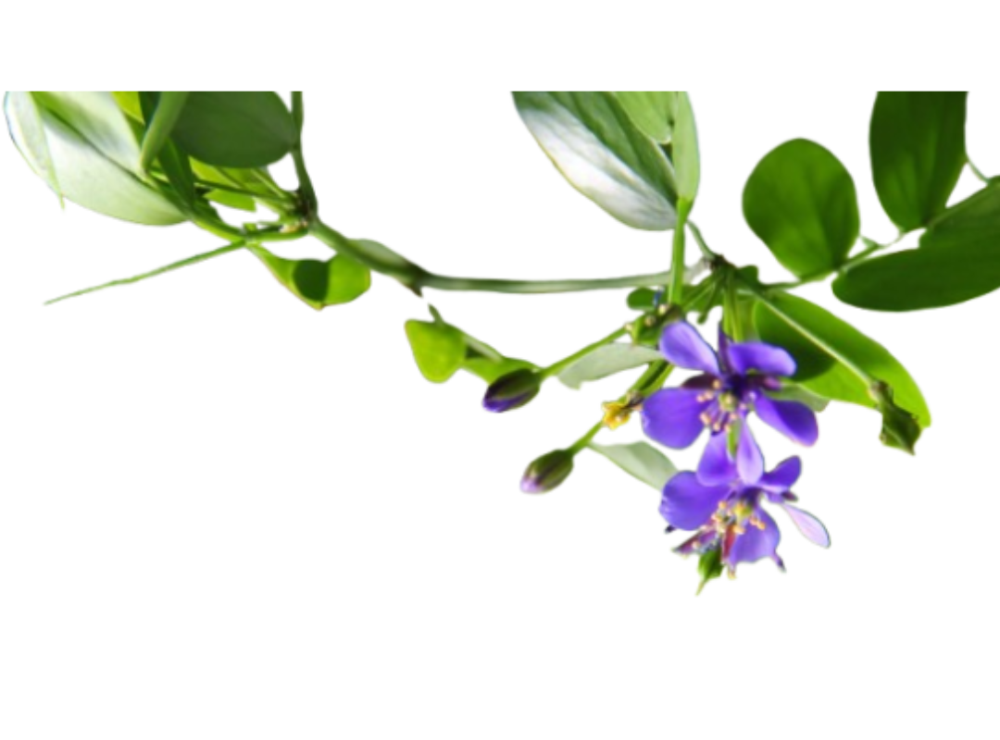
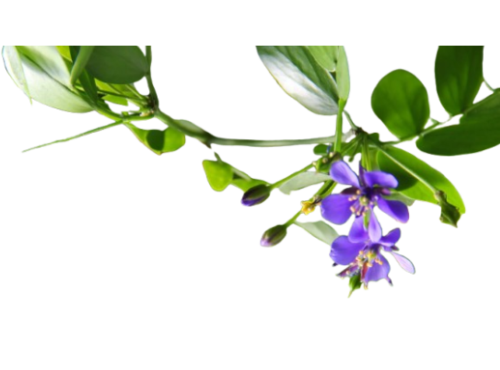

Common Names: Lignum
Scientific Name: Guaicum Officinale
Where to See: Public Parks, Median Islands, Boundary Trees
Suggested Uses: Street Trees, Ornamental Trees, Hedging
 

Lignum Vitae, meaning Tree of Life, is an exotic species all the way from Central America. Lignum’s wood is strong, tough, and dense but gets its name from its various historical medicinal uses, like its use in treating syphilis. Lignum trees grow to not more than 25 feet though this can take many decades to reach.
Lignum slowly grows to be a rather small, stout tree. Careful pruning may encourage it to be taller and more slender however such a process can take decades as Lignum trees are really very slow growers. Its leaves are dark green and waxy, which helps it retain water in dry periods. Its bark tends to flake, shedding large waxy grey-green chunks of bark, revealing a smooth trunk inside.
The tree blooms twice a year: once in the early summer and the other in the post-monsoon. Lignum flowers are extremely showy! They blanket the tree in purple flowers which fade to white. Over the flowering season you’ll see the ground below blanketed in soft white petals. After the flowering season, the tree is covered with small orange seed pods which contain a singular bright red seed.
Lignum is one of Karachi’s most commonly planted. Perhaps it's because of their ornamental value but we believe it's more that many Karachiites with the resources to plant large trees simply prefer not to. This may stem from the belief that large trees may be troublesome as they demand more space. Lignum’s low height and unremarkable presence may seem more ‘convenient,’ hence their popularity.